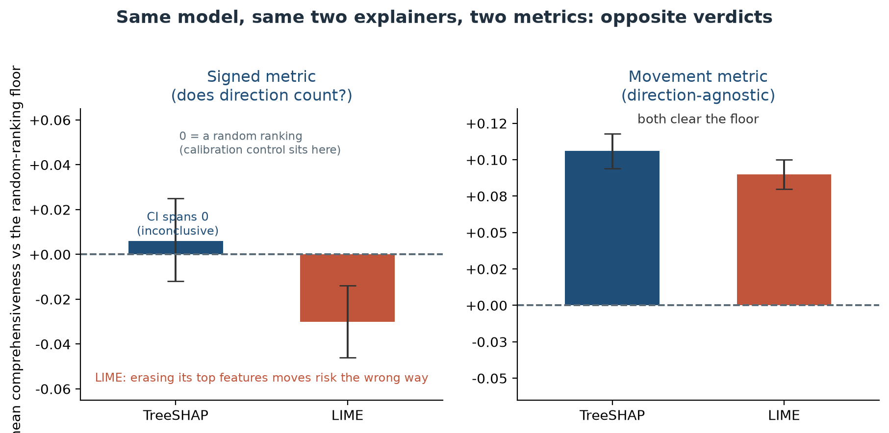

Faithfulness is metric-dependent: a credit-model audit across regimes, signs, and datasets
I set out to test whether my credit model’s explanations were faithful. Same model, same two explainers, and I could make them look faithful, unfaithful, or inconclusive by changing the measurement alone.
In Part 1, I audited the same model’s decisions and found it would approve some rejected applicants only if they asked for a bigger loan. This piece is about a quieter failure in the same model: whether the explanations we attach to its decisions are telling the truth.
The finding, in four lines - What: same model: LIME below the random-ranking floor under a signed metric (−0.0305), comfortably above it under a movement metric (+0.090); TreeSHAP inconclusive under the first. Nothing changed but the ruler. - Why it matters: “the model is explainable” is not a fact you can state without naming the metric behind it. For decisions like credit scoring, the law asks for explanations that are “meaningful.” - How I found it: one erasure test under three perturbation regimes, a direction-agnostic re-scoring of the conditional regime, and a retrain-based cross-check, all against a calibrated random-ranking floor. - Practitioner action: before you trust a SHAP or LIME plot, ask which metric produced it, which perturbation regime, and whether the verdict survives a second dataset.

What a faithfulness test is actually measuring
For one applicant, SHAP and LIME hand you a ranked list of feature contributions: what moved this score, and which way. A faithful explanation is one where that list reflects what the model actually did, rather than a plausible-looking story laid over it.
There is a standard way to test that, and it is refreshingly blunt. Take the features an explainer calls most important, erase them, and watch how far the model’s predicted risk moves. If the explanation pointed at features the model genuinely leans on, the prediction should move; if it barely moves, the explanation picked the wrong things. The result is compared against a floor: the same test averaged over many random feature rankings, in my case across 300 test applicants. A faithful explainer has to beat the floor; a separately drawn random ranking (the control row in the table below) should sit on it.
That sounds like one number per explainer. It produces several, because three choices in that paragraph are unspecified, and each one moves the verdict.
The verdict flips with the metric
Here is the same erasure test on the audited LightGBM model (German Credit, 300 test applicants), read four ways:
| Signed, conditional | Signed, marginal | Movement, conditional | Signed, baseline (fixed reference) | |
|---|---|---|---|---|
| TreeSHAP | inconclusive (+0.006, CI spans 0) | inconclusive (−0.014, CI spans 0) | faithful (+0.106) | faithful (+0.074) |
| LIME | below the floor (−0.0305) | below the floor (−0.048) | faithful (+0.090) | not faithful (+0.017) |
| separate random control | at the floor (−0.003) | at the floor (−0.003) | at the floor (+0.003) | at the floor (+0.001) |
Every cell is the mean difference against the random-ranking floor (the diff_mean fields in the repo’s metrics files, not the raw per-explainer means). The movement column is a post-hoc diagnostic; more on its status below.
The movement metric asks only whether the prediction moved when you erased the top features. Both explainers clearly beat that floor; the separate random control sits on it.
The signed metric keeps the direction of the change: erasing the features an explanation flags as driving this applicant’s risk should, on net, pull the predicted risk down. By that reading LIME lands below the floor: erasing the features it calls most important moves the predicted risk the wrong way on average. TreeSHAP is inconclusive, its interval straddling zero. One mechanical caveat: features are ranked by the size of their attribution, so erasing risk-raising and protective features together can cancel, and that cancellation mutes signed scores under realistic perturbations. A signed comprehensiveness score is still the kind a practitioner might report by default, and taken alone it would have left TreeSHAP with no verdict and LIME below the floor. Swap the perturbation from conditional to marginal, where replacement values are drawn blind to the applicant’s other attributes, and nothing clears the signed test; LIME again lands below the floor.
The baseline reading replaces features with a fixed reference value rather than a plausible alternative. Only TreeSHAP clears it, and this one rewards attributions that point at high-leverage features regardless of the individual applicant, so I treat it as the weakest of the three regimes.
None of this makes explanations useless. TreeSHAP is the more consistent explainer; LIME clears the bar only under the movement metric, and its rankings hold up under the global-ranking (ROAR) cross-check. No single score captures that. Report one number and you can clear an explainer, put it below the floor, or leave it with no verdict at all.
What the second dataset changed
I ran the same benchmark, re-parameterised for a smaller feature set (top-5 of 10 features instead of top-10 of 20), on a structurally different dataset: Give Me Some Credit, with all-numeric features, heavy class imbalance (about 6.7% of borrowers default), a 6,000-row subsample, and a separate LightGBM (test AUROC 0.827). The headline held. Both explainers beat the movement floor, TreeSHAP ahead of LIME, the random-ranking control on the floor.
What did not travel was the fine print. On German Credit the signed metric was inconclusive for TreeSHAP; on Give Me Some Credit, TreeSHAP comes out faithful under that same signed metric. One plausible contributor is that all-numeric features are less prone to the sign cancellation that muddies German Credit’s one-hot categories. The shuffled-label control that barely held on the first dataset behaves differently on the second, and LIME’s marginal and baseline verdicts changed too. So the conclusion is sharper than “it depends on the metric”: faithfulness verdicts do not reliably travel across datasets.
The bug that fed LIME impossible applicants
Part 1 mentioned that one of the most popular explanation tools was quietly producing impossible applicants. This is where that thread ends.
LIME explains a prediction by inventing a cloud of similar-but-slightly-different applicants around the real one, asking the model to score each, and fitting a simple local model to the results. The catch is in “slightly different.” My inputs had one-hot categoricals: blocks of columns where exactly one is a 1, encoding a single choice like housing status. LIME’s default perturbation flipped those columns independently. The result was a neighbourhood full of applicants who were simultaneously renting and owning, or neither, or three things at once. A review pass that executed the sampler and inspected its output put a number on it: 99.9% of LIME’s sampled neighbourhoods were off-manifold, invalid combinations no real applicant could take. LIME was building its explanation of a coherent model out of incoherent data.
The fix took three iterations, each disclosed in the repo: I turned discretisation back on, since my earlier run had disabled a LIME default (removing, along the way, a suspicious perfect-stability artifact); a first pass at declaring the categorical columns still sampled the dummy columns independently, so I finally rebuilt the sampling to run LIME in a label-encoded space where every generated neighbour is a valid one-hot, verified 100% valid.
# before: one-hot dummies perturbed independently -> ~99.9% impossible neighbours
explainer = LimeTabularExplainer(X_onehot, categorical_features=dummy_cols, ...)
# after: perturb in label-encoded space, re-expand to valid one-hots for the model
explainer = LimeTabularExplainer(X_labelenc, categorical_features=range(n_cats), ...)
exp = explainer.explain_instance(x, lambda Z: model.predict_proba(expand_onehot(Z)))(Schematic; the exact implementation ships in the repo.)
I cannot honestly compare new numbers with old: an invalid run is not a baseline. What I can say is that the group-valid LIME, the first version whose numbers mean anything, is the one that falls below the floor under the signed metric. Cleaning up the method did not rescue the explainer. It produced the first honest measurement of it, and the measurement is the weaker one.
A second method that never touches an impossible row
Every test so far shares a weakness: erasing features can push the model off the data it was trained on, and odd behaviour on implausible inputs is weak evidence about an explanation. So I cross-checked with RemOve-And-Retrain, a method that never feeds the model a weird row. Take each explainer’s global feature ranking, delete its top features from the data, retrain the model from scratch, and measure how much test AUROC you lose. If a ranking pointed at genuinely important features, the retrained model should be meaningfully worse. Over eight stratified re-splits of the same data:
| Ranking | mean test-AUROC drop (8 splits) |
|---|---|
| TreeSHAP | 0.108 |
| LIME | 0.109 |
| the model’s own gain | 0.098 |
| random | 0.036 |
Both explainers degrade the model about three times as much as a random ranking, on every one of the eight splits. Their rankings identify feature groups that carry genuinely predictive signal. ROAR does not distinguish TreeSHAP from LIME, though: on a deliberately coarse yardstick (a mean difference bigger than two standard errors), the gap is −0.001, and TreeSHAP wins four splits of eight. The “TreeSHAP beats LIME” ordering from the erasure tests does not reproduce. ROAR corroborates, through a completely different mechanism, that both explainers carry real signal, while refusing to crown a winner. It also only speaks to global feature-ranking utility, not to whether any single applicant’s explanation is faithful, and I do not stretch it past that.
The three dimensions every faithfulness claim must state
“Faithful” is not a property of an explainer. It is a property of an explainer under a stated metric, a stated perturbation regime, and a stated sign convention. Leave any of the three unstated and the claim is not checkable, because a different reasonable choice can reverse it. That makes it a reporting requirement rather than a framework to adopt: state the three, and another practitioner can rerun you.
In practice, before you believe an attribution plot:
- Which perturbation regime produced it? Conditional, marginal, and baseline erasure can disagree, and the baseline version quietly rewards features that are important on average rather than for this person.
- Is it group-valid? If your data has one-hot categories, confirm the method is not sampling impossible rows. That single bug is why my first LIME numbers were meaningless.
- Does it survive both a signed and a direction-agnostic metric? If they disagree, investigate before you average: in my case the disagreement traced to sign cancellation, but noise alone can produce it.
- Does it hold on a second dataset? Mine mostly did; the fine print did not. Run it anyway.
If you sign off on model explanations: the EU AI Act’s Article 86 gives affected people the right to obtain from the deployer “clear and meaningful explanations of the role of the AI system in the decision-making procedure and the main elements of the decision taken.” The conditions are specific, and credit scoring sits on Annex III’s high-risk list. The GDPR requires “meaningful information about the logic involved” for the automated decisions Article 22 covers (Articles 13 to 15). Neither text uses the word faithful. My reading is that both presuppose it, because an explanation that misstates what drove the model is not meaningful information about its logic. This audit shows that faithfulness is conditional on how it is measured. So a report that states a single comprehensiveness score, with none of the three choices behind it, is not sufficient evidence that the explanation is faithful, which is the thing the duty presupposes. A deployer putting a SHAP plot in front of a loan officer or a declined applicant is making a faithfulness claim, whether they know it or not.
Why you can believe any of this
I pre-registered the four hypotheses and the primary metric in a signed, timestamped record before running anything, anchored to a public blockchain block. I then reported all four as they landed: two refuted, one supported, one fragile. The prediction that TreeSHAP would be faithful under the signed conditional test on German Credit is one of the two I had to mark refuted. I did not manufacture an adverse finding, and I did not quietly upgrade the metric that would have flattered my own model. Throughout, a random-ranking control sits on the floor under every tested metric-regime combination. That is the calibration check I lean on. The off-manifold LIME bug was caught by a panel of separate AI models reviewing the work, which is quality control, not independent human assurance, and I say so in the repo.
What it does not claim
This is a self-assessment of two explainers on one model per dataset, not a general verdict on SHAP or LIME. The movement metric is calibration-checked, meaning a random ranking lands on its floor, but it is not validated against a known-faithful explanation, so I treat its results as exploratory. ROAR separately confirms that the global rankings point at genuinely predictive feature groups; it cannot vouch for any individual explanation. A confounded control, a model trained on shuffled labels, also clears the movement bar, which is part of why I call that bar lenient. The perturbation is approximate: a nearest-neighbour donor imputation whose residual off-manifoldness I measure rather than eliminate. And the sample is small, 300 applicants per dataset, with high per-instance variance.
It is also still missing the same thing Part 1 was: an independent human reviewer who built neither the model nor the audit.
That gap is the one I cannot close by myself. The repo ships a structured reviewer template, and if you have the background and had no hand in this work, I will publish your verdict in full, including the parts where you say I got it wrong.
Back to the beginning
Both pieces are the same lesson from two angles: an audit is only as honest as the choices it refuses to leave unstated. In Part 1 the unstated choice was the direction I searched. Here it was the ruler.
The full benchmark, the pre-registered hypotheses, the signed audit opinion, and the evidence trail are here: eu-ai-act-credit-assurance. If you missed the decision-side story, that is Part 1. I am moving into AI assurance and governance work. If your team needs results that state which metric produced them, I would like to hear from you.
Prefer a typeset copy? Download the PDF.